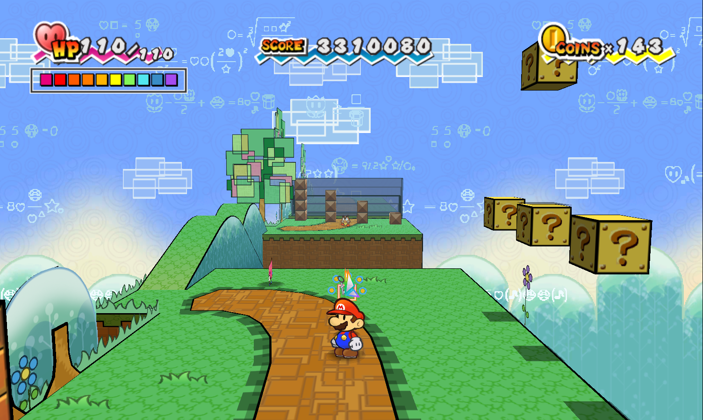
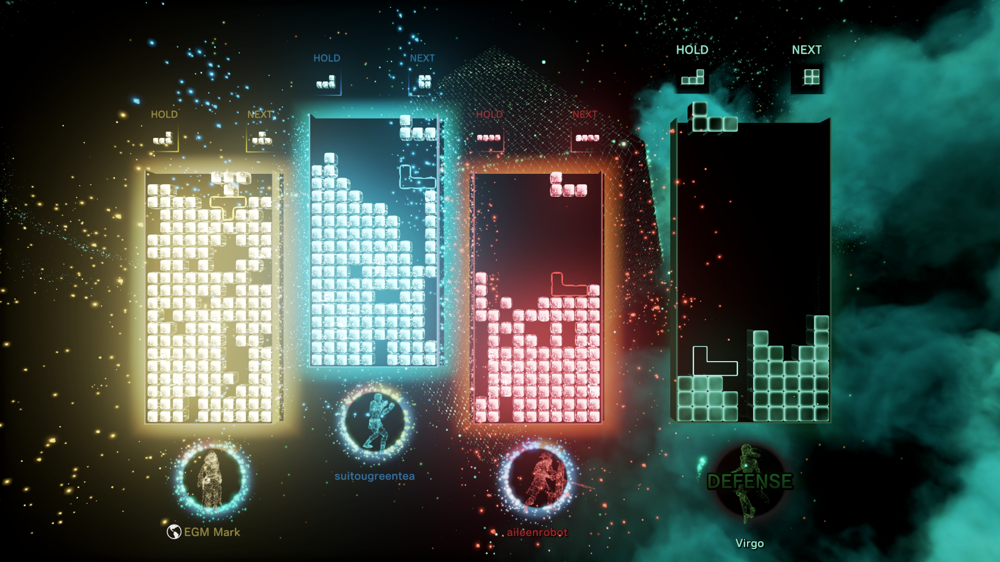

★ Gayming ★
A cute lil place for me to talk about my video games. I like video games so here's a little place for em!
My reviews
My faves!
Sonic GenerationsPC, Xbox 360, PS3
 Sonic's 20th anniversary celebration, Sonic Generations is my favorite game ever! It's got really fun platforming and it's addicting trying to get good times on the stages. I love the soundtrack, too! My favorite stage and song in the game is Chemical Plant: Act 2!
Sonic's 20th anniversary celebration, Sonic Generations is my favorite game ever! It's got really fun platforming and it's addicting trying to get good times on the stages. I love the soundtrack, too! My favorite stage and song in the game is Chemical Plant: Act 2!
Super Paper Mario
Wii  I have a bit of a soft spot for this game. I'm not a huge fan of RPGs, so I really love the 2D platformer approach this game takes! It's got the best story in any Mario game IMO, and it's such a charming little world to explore. It was also my first 2D Mario! The music for Lineland Road fills me with a warm, fuzzy vibe. ^w^
Tetris Effect
Windows 10, Xbox One, PS4, Oculus Quest, Nintendo Switch  I am a huge Tetris nerd. I LOVE Tetris so much. When I got to play Tetris Effect in VR for the very first time, I was overwhelmed with emotion. It's a strange thing to say a Tetris game made me cry, but it did. Playing this game in VR is an experience unlike any other, and is an experience I wish I could experience for the first time, over and over again.